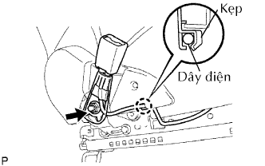
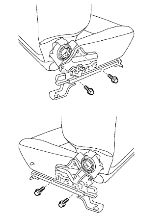
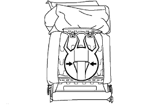
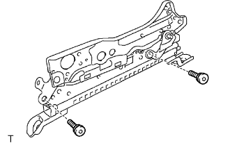
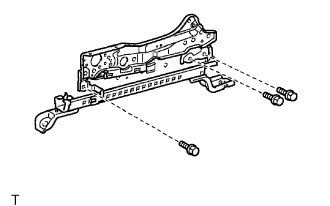

CỤM GHẾ TRƯỚC > THÁO RỜI |
| 1. NÚM ĐIỀU CHỈNH GHẾ THẲNG ĐỨNG BÊN TRÁI (w/ Bộ điều chỉnh thẳng đứng) |
Dùng một tô vít, tháo phanh hãm như trong hình vẽ. Sau đó tháo núm.
| 2. THÁO TAY CẦM NHẢ BỘ ĐIỀU CHỈNH NGHIÊNG GHẾ TRÁI |
Nâng tay nhả bộ điều chỉnh nghiêng ghế để lộ vấu ra. Dùng một tô vít, nhả khớp vấu và tháo tay nhả khóa.
| 3. THÁO BỌC NỆM GHẾ TRƯỚC TRÁI |
 |
Tháo 2 vít.
Nhả khớp phần sau của bọc nệm ghế theo thứ tự chỉ ra trên hình vẽ để nhả vấu và tháo bọc nệm ghế.
| 4. THÁO CỤM ĐAI TRONG GHẾ TRƯỚC (cho Người lái) |
 |
Nhả kẹp.
|  |
Tách dây điện ra khỏi kẹp.
Tháo đai ốc và đai an toàn.
Tháo nắp khóa cài.
| 5. THÁO CỤM ĐAI TRONG GHẾ TRƯỚC (Cho Phía Hành khách trước) |
Tháo đai ốc và đai an toàn.
Tháo nắp khóa cài.
| 6. THÁO BỌC BÊN TRONG NỆM GHẾ GHẾ TRƯỚC TRÁI |
Tháo 2 vít. Sau đó tháo bọc bên trong theo hướng được chỉ ra như trong hình vẽ.
| 7. THÁO CỤM LƯNG GHẾ TRƯỚC |
|  |
Tháo 4 bu lông và lưng ghế.
| 8. THÁO BỌC LƯNG GHẾ TRƯỚC |
 |
Nhả khoá móc và tháo 5 vòng hãm như được chỉ ra trên hình vẽ.
Lật bọc lưng ghế lên.
Tháo 2 vòng kẹp như được chỉ ra trên hình vẽ.
|  |
Nhả khớp 4 vấu và tháo 2 thanh đỡ tựa đầu.
Tháo bọc lưng ghế (với miêng lót) ra khỏi lò xo lưng ghế.
Tháo 4 vòng hãm và bọc lưng ghế ra khỏi lót lưng ghế.
| 9. THÁO LÒ XO LƯNG GHẾ |
| 10. THÁO BỌC NỆM GHẾ TRƯỚC |
Nhả khớp 2 móc.
Nhả khớp các móc trong vùng móc như trong hình vẽ.
Tháo 7 vòng hãm và bọc lưng ghế ra khỏi khung nệm ghế.
Tháo 2 cái bảo vệ mép trước nệm ghế trước.
Tháo 6 vòng hãm và bọc lưng ghế ra khỏi lót lưng ghế.
| 11. THÁO KHUNG NỆM GHẾ TRƯỚC TRÁI |
 |
Tháo 4 bulông và khung nệm ghế.
| 12. THÁO TRỤC ĐIỀU CHỈNH THẲNG DỨNG (w/ Bộ điều chỉnh thẳng đứng) |
 |
Dùng một tô vít, tách lò xo ghế ra khỏi tay chỉnh nghiêng ghế như trong hình vẽ.
Dùng một tô vít, bung một phần các tai giữ lò xo như trong hình vẽ. Sau đó tháo lò xo.
Tháo chốt bộ điều chỉnh ghế trước.
Lắp tạm núm bộ điều chỉnh ghế thẳng đứng.
Xoay núm cùng chiều kim đồng hồ để bánh răng dịch chuyển trục điều chỉnh thẳng đứng. Dịch bánh răng đến vị trí như được chỉ ra trong hình vẽ.
Tháo núm bộ điều chỉnh ghế thẳng đứng.
Dùng một tô vít, tháo 2 phanh hãm chữ E như được chỉ ra trên hình vẽ. Sau đó tháo trục điều chỉnh.
| 13. THÁO TAY ĐIỀU CHỈNH TRƯỢT GHẾ |
Nhả khớp các lò xo theo thứ tự như trong hình vẽ. Sau đó tháo tay nắm.
| 14. THÁO THANH BỘ ĐIỀU CHỈNH GHẾ TRƯỚC (w/ Bộ điều chỉnh thẳng đứng) |
Tháo 2 bu lông và thanh điều chỉnh.
| 15. THÁO TAY ĐIỀU CHỈNH NGẢ GHẾ DƯỚI BÊN TRÁI |
|  |
w/ Bộ điều chỉnh thẳng đứng:
Dùng đầu khẩu đầu hoa khế T40, tháo 2 bu lông và tay điều chỉnh.
|  |
w/o Bộ điều chỉnh thẳng đứng:
Tháo 3 bu lông và tay điều chỉnh.
| 16. THÁO TAY ĐIỀU CHỈNH NGẢ GHẾ DƯỚI BÊN PHẢI |
| 17. THÁO BẢO VỆ MÉP NGOÀI CỦA NỆM GHẾ TRƯỚC |